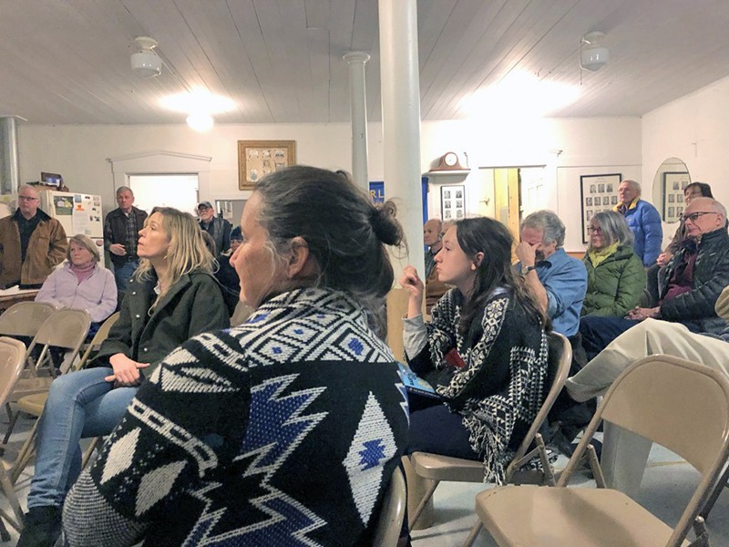
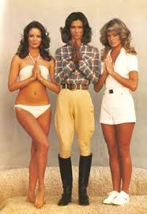

My town government
May 21, 2020-- Reporting on local government was one of my first jobs out of college, and I often would attend 1-2 small town meetings a week in southern Chester County, which my my "beat" for The Philadelphia Inquirer". That's where I began my weird fascination with local government. Today, I live in a town of 3,000 people, here you can see a photo of my and my daughter (right), attending a town meeting. She's asking the road commissioner how to prevent wildlife from being hit by cars. If I had more time, I'd love to be a town politician, and the first thing I'd do is make all government totally transparent.
On Hack Club
May 13, 2020-- Three of the most interesting books I've read lately are converging in my mind: 1 was The Innovators, about the modern history of the computer, and the people who unintentionally collaborated over 2 centuries to build it. It resonated for me because it reinforced that only a handful of unconventional thinkers/artists/eccentric geniuses drive the true world-changing innovation but they fail if they do it alone. What's more important in achieving a goal: A great team or a great idea? Both are ideal, but if I had to, I'd pick the former.Second is Tightrope by Sheryl Wudunn & Nicholas Kristof, who I know from NYT and who is also a very kind person. Through on-the-ground reporting, it exposes the way millions of Americans are silently suffering and that- more than anything- will lead to the collapse of empire.
Third is Our Towns by Deborah & James Fallows, in which the married, retired journalists fly across America understanding successful small cities/towns. He gets off the coasts and captures the energy and innovation happening in places like where I live, Burlington Vermont. My favorite line is buried at the end, where they remark on the correlation between a town's success, and the ability of its citizens to identify a few key leaders, who aren't always elected or paid. That observation drives me: we all have the ability to make huge differences in the world by just going out and driving for good in whatever area is your passion.
Concluding that if Hack Club achieves its goal, it'll have thousands of young leaders scattered across the country, technically proficient, networked with each other, understanding how to raise and manage $$$, and valuing kindness, curiousity, relentlessness, transparency and optimism./
On Margaret Fuller
 Women working in security wore bikinis!
In 2014, I read "A New Life", the biography on Margaret Fuller by Megan Marshall which inspired me to found The Fuller Project, which is a journalism organization dedicated to increasing investigative journalism on issues impacting women and girls. Over the years, I led the fundraising of more than $5 million from incredible donors, built a team including dozen of journalists, and published hundreds of articles in all the major outlets and reached audiences into the millions. In 2020, I left Fuller Project for Hack Club. I hope it will go on for years and produce multiple investigations annually, and end so much of the injustice against young women and girls and exploited groups.